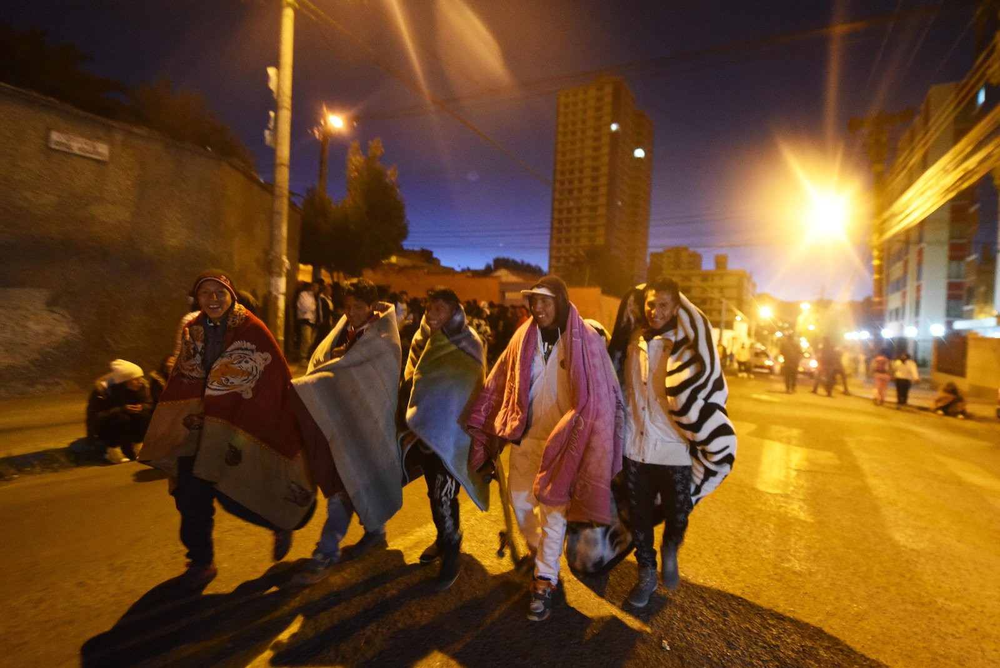

-Gastronomía: Es tradicional preparar y consumir hasta doce platillos durante la Semana Santa, evitando las carnes rojas. Algunos de estos platos incluyen la sopa de pan, locro de zapallo, arroz con leche y chicha de manzana. También se consumen diversas frutas y biscochos.
-Peregrinaciones: Antiguamente, eran comunes las peregrinaciones los viernes hacia la Iglesia Señor de la Exaltación en Obrajes.
-Domingo de Ramos: La gente lleva cruces trenzadas de hojas de palma a las iglesias para ser bendecidas.
